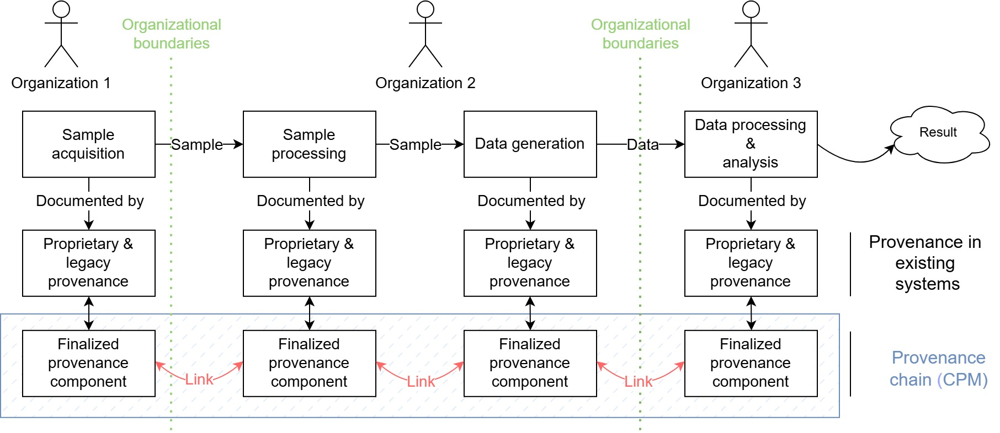
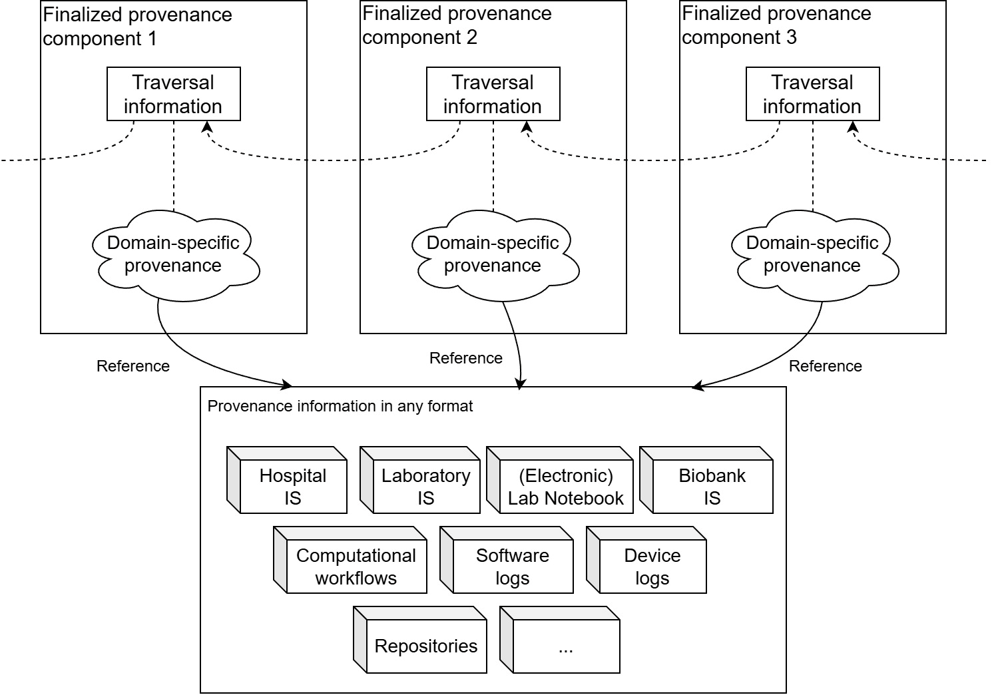
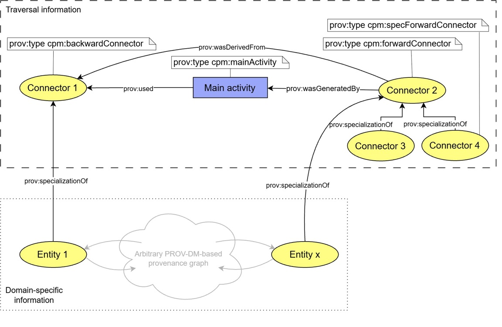
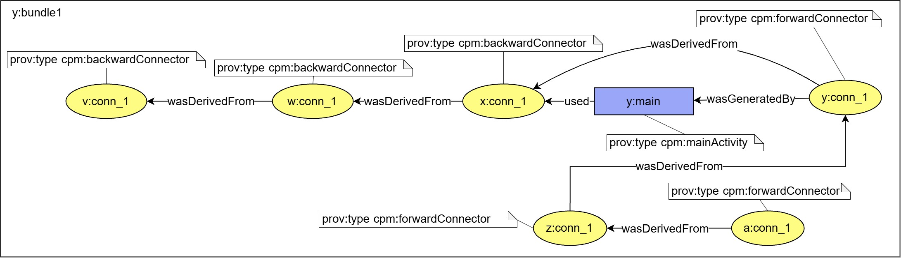

CPM specification
The Common Provenance Model (CPM) is a data model for representing trustworthy and confidentiality-preserving multi-organizational provenance information. It has been adopted and standardised by ISO as ISO 23494-2 (Provenance information model for biological material and data — Part 2: Common provenance model).
Terminology
- Described object
- Physical or digital object to be traced.
- Described activity
- Activity performed on a described object.
- Provenance information
- Information that documents the history of a described object and related described activities, and that contains information about the origin or source of the described object, any changes that have occurred since it was created, and who has had custody of it since it was created.
- Provenance component
- Provenance information represented according to the CPM with a unique identifier assigned to it.
- Finalized provenance component (FPC)
- Provenance component, which is prepared to be conserved or archived, and which is considered immutable.
- Finalization event
- An event in which provenance information is transformed into a finalized provenance component.
- Meta-component
- Provenance component that contains metadata about a finalized provenance component.
- Provenance chain
- A set of mutually interlinked finalized provenance components.
- Provenance controller
- A party that determines the purposes for which and the means by which provenance information and finalized provenance components are collected, stored, and provided, and that collects finalized provenance components documenting relevant described activities.
- Provenance processor
- A party that performs activities related to finalized provenance components, such as generation, storage, or provision of finalized provenance components.
- Provenance provider
- A software, a device, a person, a subsystem, an organization, or a group that has a recognizable existence, carrying out described activities and supplying relevant provenance information.
- Sender
- A provenance controller that provides a described object to a provenance controller.
- Receiver
- A provenance controller that receives a described object from a provenance controller.
Provenance chains
The CPM and its underlying ontology (CPM-O) are suitable for situations in which documented objects (e.g. a sample) or their derivatives (e.g. data generated from a sample) are exchanged between organisations, so that each organisation can provide provenance information about only a part of the object's life cycle. Each organisation therefore generates a finalized provenance component (technically implemented as PROV Bundle), which is managed independently and interlinked with other related provenance components. A set of interlinked finalized provenance components forms a provenance chain. Figure 1 shows an example.

Structure of a provenance component
Provenance information is represented as a semantically annotated oriented graph based on PROV-DM. The nodes represent entities, activities, or agents, and the edges represent their mutual relations.
The core idea of the model is that each finalized provenance component is divided into two parts:
- Traversal information, which is domain-agnostic and serves as a signpost for distributed provenance information and its traversal.
- Domain-specific information, which carries specific information about the described objects and related activities.
The traversal information is a standardised subgraph that is attached to an arbitrary PROV graph representing
the domain-specific information. The attachment follows the compound activities pattern, i.e. it uses
specialization relations (prov:specializationOf) and the attributes related to the main
activity.
Figure 2 shows the general schema of the traversal information and the domain-specific information in a provenance chain.

Traversal information
CPM specifies a standardised representation of the traversal information, shown in Figure 3. The
traversal information expresses a described activity at the most coarse-grained level: the activity itself
(cpm:mainActivity), its inputs (cpm:backwardConnector), its outputs
(cpm:forwardConnector), the organisational responsibilities (cpm:senderAgent,
cpm:currentAgent), and their mutual relations. To support forward navigation along the provenance
chain, an output may be further described by specialized forward connectors
(cpm:specForwardConnector): each is a specialization of the forward connector and represents the
output as sent to a particular receiver (cpm:receiverAgent).

The relations in Figure 3 are PROV relations:
| Relation | From | To |
|---|---|---|
prov:used | main activity | backward connector |
prov:wasGeneratedBy | forward connector | main activity |
prov:wasDerivedFrom | forward connector | backward connector |
prov:wasAttributedTo | backward connector | sender agent |
prov:wasAssociatedWith | main activity | current agent |
prov:specializationOf | specialized forward connector | forward connector |
prov:wasAttributedTo | specialized forward connector | receiver agent |
Attaching domain-specific information
Figure 4 shows how the domain-specific information is attached to the traversal information: entities of
the domain-specific provenance graph are specializations (prov:specializationOf) of the connectors.

Identifying described objects
A described object is represented in a provenance component as a PROV entity. Its identifier is associated with the entity in one of two ways:
- Attribute
cpm:externalIdof the entity: its value is the identifier of the described object; no further information is associated with the identifier. - Attribute
cpm:hasIdand identifier entity: the identifier is represented by an alternate PROV entity of typecpm:id(the identifier entity), described below.
In the second mechanism, the entity representing the described object and the identifier entity are related by
prov:alternateOf. The entity representing the described object has the attribute
cpm:hasId, whose value is the identifier of the identifier entity. The identifier entity has the
attributes cpm:externalId, whose value is the identifier of the described object, and
cpm:externalIdType, whose value is the type of this identifier (analogous to the Content-Type in email
headers). Further information related to the identifier can be attached to the identifier entity. Using the type and
the identifier, or other optional attributes, an application processing the entity can determine how to access the
referenced object, where this is enabled. This provides a harmonized way of referring from a provenance component to
an external system. The following PROV-N example shows the pattern; all identifiers and values are illustrative.
entity(ex:object1, [cpm:hasId="https://example.org/object1-id" %% xsd:anyURI])
entity(ex:object1-id, [prov:type='cpm:id',
cpm:externalId="10.5281/zenodo.8279525",
cpm:externalIdType="DOI"])
alternateOf(ex:object1, ex:object1-id)
Here, the prefix ex stands for https://example.org/, so the value of
cpm:hasId is the full IRI of the identifier entity ex:object1-id.
A described object can have multiple identifiers, but the two mechanisms should not be combined for a single described object in one provenance component. The PROV identifier of the entity should not be used as the identifier of the described object, as the requirements on the identifiers of the internal provenance structures may differ from the requirements on the identification of described objects.
Attributes of the CPM structures
The following tables list the attributes of each structure of the traversal information and of the identifier
entity. Mandatory attributes must be present; optional attributes may be added. The values of attributes of type
xsd:anyURI are full IRIs typed as xsd:anyURI, e.g.
cpm:referencedBundleId="https://example.org/bundles/b0" %% xsd:anyURI in PROV-N.
Main activity
| Attribute | Value | Description |
|---|---|---|
| Mandatory | ||
prov:type | cpm:mainActivity | type of the structure |
cpm:referencedMetaBundleId | xsd:anyURI | identifier of the meta-component that contains the metadata of the respective finalized provenance component |
cpm:referencedMetaBundleSpecV | xsd:string | specification of the CPM version used to represent the content of the referenced meta-component |
Backward connector
| Attribute | Value | Description |
|---|---|---|
| Mandatory | ||
prov:type | cpm:backwardConnector | type of the structure |
cpm:referencedBundleId | xsd:anyURI | identifier of the finalized provenance component referenced by the connector |
cpm:referencedBundleSpecV | xsd:string | specification of the CPM version used to represent the content of the referenced finalized provenance component, e.g. the identifier of this specification |
cpm:referencedBundleHashValue | xsd:string | hash value of the finalized provenance component referenced by the connector |
cpm:hashAlg | xsd:string | algorithm used to create the hash value |
cpm:referencedMetaBundleId | xsd:anyURI | identifier of the meta-component that contains the metadata of the respective finalized provenance component |
cpm:referencedMetaBundleSpecV | xsd:string | specification of the CPM version used to represent the content of the referenced meta-component |
| Optional | ||
cpm:provenanceServiceUri | xsd:anyURI | URI of a service where the referenced finalized provenance component can be requested using its identifier |
cpm:externalId | xsd:string | external identifier of the described object or described activity |
cpm:hasId | identifier of the identifier entity (xsd:anyURI) | reference to the identifier entity of the described object (see Identifying described objects) |
cpm:comment | xsd:string | arbitrary comment or additional information |
Forward connector
| Attribute | Value | Description |
|---|---|---|
| Mandatory | ||
prov:type | cpm:forwardConnector | type of the structure |
| Optional | ||
cpm:externalId | xsd:string | external identifier of the described object or described activity |
cpm:hasId | identifier of the identifier entity (xsd:anyURI) | reference to the identifier entity of the described object (see Identifying described objects) |
cpm:comment | xsd:string | arbitrary comment or additional information |
Specialized forward connector
| Attribute | Value | Description |
|---|---|---|
| Mandatory | ||
prov:type | cpm:specForwardConnector | type of the structure |
cpm:referencedBundleId | xsd:anyURI | identifier of the finalized provenance component referenced by the connector |
cpm:referencedBundleSpecV | xsd:string | specification of the CPM version used to represent the content of the referenced finalized provenance component, e.g. the identifier of this specification |
cpm:referencedBundleHashValue | xsd:string | hash value of the finalized provenance component referenced by the connector |
cpm:hashAlg | xsd:string | algorithm used to create the hash value |
cpm:referencedMetaBundleId | xsd:anyURI | identifier of the meta-component that contains the metadata of the respective finalized provenance component |
cpm:referencedMetaBundleSpecV | xsd:string | specification of the CPM version used to represent the content of the referenced meta-component |
| Optional | ||
cpm:provenanceServiceUri | xsd:anyURI | URI of a service where the referenced finalized provenance component can be requested using its identifier |
cpm:externalId | xsd:string | external identifier of the described object or described activity |
cpm:hasId | identifier of the identifier entity (xsd:anyURI) | reference to the identifier entity of the described object (see Identifying described objects) |
cpm:comment | xsd:string | arbitrary comment or additional information |
Current agent, sender agent, and receiver agent
| Attribute | Value | Description |
|---|---|---|
| Mandatory | ||
prov:type | cpm:currentAgent, cpm:senderAgent, or cpm:receiverAgent | type of the structure |
cpm:contactIdPid | xsd:anyURI | resolvable persistent identifier dereferencing to contact information of the organization represented by the agent |
| Optional | ||
cpm:externalId | xsd:string | external identifier of the described object or described activity |
cpm:comment | xsd:string | arbitrary comment or additional information |
Identifier entity
| Attribute | Value | Description |
|---|---|---|
| Mandatory | ||
prov:type | cpm:id | type of the structure |
cpm:externalId | xsd:string | external identifier of the described object or described activity |
cpm:externalIdType | xsd:string | type of the external identifier |
| Optional | ||
cpm:comment | xsd:string | arbitrary comment or additional information |
Linking provenance components
Backward traceability
Figure 5 shows the connector attributes used for the backward traversal of the provenance chain. A described object provided by a sender to a receiver is represented in the sender's finalized provenance component as a forward connector and in the receiver's finalized provenance component as a backward connector with the same identifier. The attributes of the backward connector reference the sender's component.
![A described object provided by a sender to a receiver. In the sender's component (sender:bundleId) it is represented as a forward connector (connector_id, prov:type cpm:forwardConnector); in the receiver's component (receiver:bundleId) it is represented as a backward connector with the same identifier and the attributes prov:type cpm:backwardConnector, cpm:referencedBundleId sender:bundleId, cpm:referencedMetaBundleId, cpm:referencedBundleHashValue, cpm:referencedBundleSpecV, cpm:referencedMetaBundleSpecV, and cpm:hashAlg.](img/cpm-backward-connector-attributes.png)
Forward traceability
Forward traceability is enabled by a forward link in the sender's finalized provenance component: a specialized
forward connector (cpm:specForwardConnector) specializes the forward connector, and its attributes
link to the receiver's finalized provenance component (Figure 6).
The specialized forward connector is optional, as the sender may not know the values of its attributes at the time of the finalization event, or at all. For example, a sender makes an open dataset available together with the respective finalized provenance component and does not know who uses the dataset. The receivers can still generate their finalized provenance components and connect them to the existing forward connector, which enables backward traceability. In addition, specialized forward connectors increase the complexity of managing the provenance components and create additional links to other components, which may be confidential.
![A described object provided from a sender to a receiver. In the sender's component (sender:bundleId) it is represented as a forward connector (connector_id, prov:type cpm:forwardConnector), specialized by connector_id2 with prov:type cpm:specForwardConnector and the attributes cpm:referencedBundleId receiver:bundleId, cpm:referencedMetaBundleId, cpm:referencedBundleHashValue, cpm:referencedBundleSpecV, cpm:referencedMetaBundleSpecV, and cpm:hashAlg. In the receiver's component (receiver:bundleId) it is represented as a backward connector with the same identifier connector_id and the corresponding attributes referencing sender:bundleId.](img/cpm-forward-connector-attributes.png)
Redundant connectors
If a provenance component becomes unavailable, e.g. because its provenance controller ceases to exist or does not generate finalized provenance components, the links to it become invalid. CPM therefore allows linking components that describe non-adjacent activities through redundant connectors: one or more additional backward or specialized forward connectors in a finalized provenance component, connected to each other by derivation relations (Figure 7). Each of these connectors is also present in an existing finalized provenance component, where it is used or generated by the corresponding main activity.

Backward redundancy. When a subsequent component is added to the chain, the whole derivation chain of the backward connectors from which the linking forward connector was derived can be duplicated in the new component. No other connectors are duplicated. If a component disappears, the redundant backward connectors still link to the component preceding it.
Forward redundancy. When a component creates a forward link to a newly added component, this information can be propagated to the components linked to it, which can then add the corresponding redundant specialized forward connectors. The same procedure applies when a chain forks and when a preceding component is added.
Redundant connectors are optional. The added redundancy increases the complexity of managing the provenance components and creates additional links to existing components, which may be confidential.
Summary of rules
Provenance components and traversal information:
- Each provenance component contains a provenance graph according to PROV-DM, encapsulated in a PROV bundle with a unique identifier and valid according to PROV-CONSTRAINTS.
- Each finalized provenance component contains exactly one main activity, which should generate at least one forward connector.
- Finalized provenance components are linked by connectors: the receiver's component contains a backward connector with the same identifier as the forward connector in the sender's component, and the attributes of the backward connector link to the sender's component.
- A finalized provenance component without a backward connector represents the beginning of a provenance chain (e.g. sample acquisition).
- The current agent is mandatory and is associated with the main activity.
- Backward connectors, forward connectors, and specialized forward connectors are optional.
- Redundant connectors are optional (see Redundant connectors).
- Agents are mandatory if the corresponding connector is present: each backward connector is attributed to a sender agent, and each specialized forward connector is attributed to a receiver agent.
- A described object is represented by a PROV entity and should be identified as described in Identifying described objects.
- Each structure of the traversal information and each identifier entity contains its mandatory attributes, as listed in Attributes of the CPM structures.
Domain-specific information:
- is attached to the traversal information as described in Structure of a provenance component;
- conforms to the requirements on provenance components;
- does not contain any backward or forward connector, main activity, or sender, current, or receiver agent;
- may add details about the main activity, e.g. sub-activities, intermediate or side products, or links to external systems.